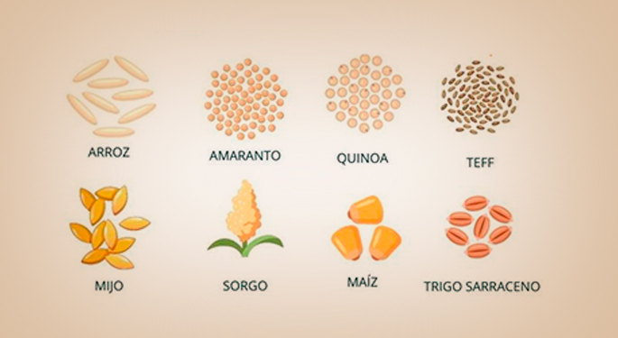

Una persona diagnosticada con celiaquia, deberá eliminar de su dieta los alimentos y bebidas que contengan gluten.
Es bueno destacar que el gluten es un conjunto de proteínas de pequeño tamaño, contenidas exclusivamente en las semillas de los cereales de secano,
fundamentalmente el trigo, pero también la cebada y el centeno, así como cualquiera de sus variedades e híbridos y algunas variedades de avena.
Seguir una dieta sin gluten puede aliviar los sintomas de la enfermedad celiaca y curar el daño que esta produce al intetsino delgado.
Se recomienda consultar a un especialista sobre como llevar una dieta balanceada y sin gluten.

La contaminación cruzada hace referencia al pasaje del gluten al alimento que no lo contiene: esto quiere decir que el alimento deja de ser apto para personas con enfermedad celíaca.
La mayoría de las veces, la contaminación se da de manera involuntaria,por ignorancia o descuido.
Los utensilios usados en alimentos sin gluten no deben emplearse en los que no contienen gluten.
Limpieza y desinfección en el area de cocina
Los alimentos sin gluten deben ir guardados en alacenas diferentes a los otros alimentos y estos deberan estar muy bien cerrados.